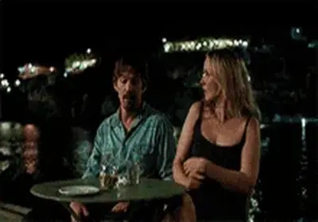
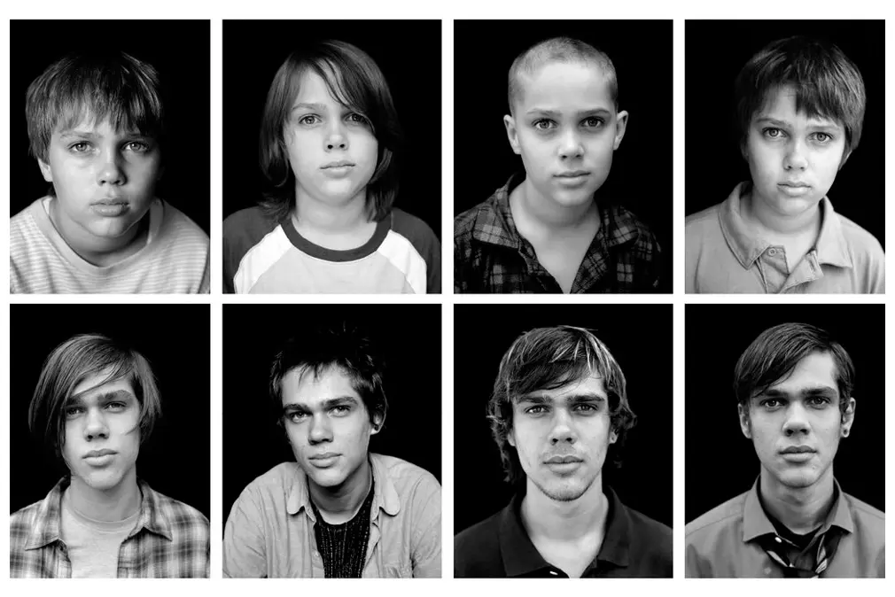

Vol.23 / Extra Edition: Before Trilogy
9年ごとの再会：
『ビフォア・トリロジー』が刻んだ愛の経年変化
2026.04.25 UP
🎬 Introduction
1960年テキサス州生まれ。独学で映画を学び、低予算映画『スラッカー』で注目を浴びました。彼の最大の特徴は、**「時間の流れを映画の構造そのものにする」**という極めて実験的な姿勢です。
01. ビフォア・サンライズ 恋人までの距離 Filmarks Amazon Prime
発表年: 1995
特徴: ウィーンの街を歩きながら喋り続ける。若さゆえの万能感と「一晩」という極限のタイムリミット設定。ストップモーションならぬ「歩行の連続性」の美学。
02. ビフォア・サンセット Filmarks Amazon Prime
発表年: 2004
特徴: パリ。実時間とほぼ同じ85分間をリアルタイムで描く。脚本段階から俳優二人が深く関与し、会話の「間」や「温度差」を極限まで構造化した。
03. ビフォア・ミッドナイト Filmarks Amazon Prime
発表年: 2013
特徴: ギリシャ。ロマンスが生活へと変わった「重み」を描く。三部作の中で最も長回しのテイクが多く、会話の「アッセンブリー（組み立て）」が神業。

04. 6才のボクが、大人になるまで。 Filmarks Amazon Prime
発表年: 2014
特徴: 監督の執念の極致。CGを使わず、俳優の実際の加齢を12年間記録。この「待つ」という工程は、まさにコマ撮り職人の魂と同質。
